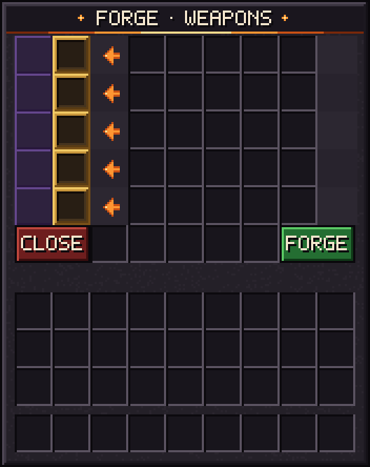

Kovárna a hvězdy
Kovárna
Shift + pravé tlačítko na crafting table s prázdnou rukou. Vybereš recept a u materiálů vidíš potřeba / máš. Když máš všechno, klikni na FORGE.

Rituál
- Materiály zmizí a celý server se dozví, co se kove – ale ne kdo.
- Boss bar ukazuje zbývající čas a nápovědu, kde to je. Poloha se odhaluje postupně: nejdřív jen dimenze, v 33 % oblast ±500 bloků, v 66 % ±100 bloků a v 87 % přesné souřadnice.
- Předmět se točí nad stolem a stůl nejde rozbít, spálit ani vyhodit do vzduchu.
- Na konci udeří blesk a legenda spadne na stůl. Kdo ji sebere, toho je.
- Rituál potřebuje aspoň 3 hráče online; když jich ubude, čas se zastaví.
Každá legenda jen jednou
Každá zbraň a relikvie může na serveru existovat jen jednou. Jakmile se její rituál spustí, nikdo jiný ji kovat nemůže. Když se legenda zničí (láva, oheň, void, zmizí na zemi), dá se ukovat znovu. A když její majitel dlouho nehraje, legenda se rozpadne a vrátí do kovárny.
★ Hvězdy
Každá legendární zbraň má 1 až 5 hvězd (po půlkách). Každá hvězda nad ★★★ přidává 7.5 % poškození a ubírá stejně z cooldownů, každá pod ★★★ naopak ubírá. Čerstvě ukovaná zbraň má ★.
- Smrt bere hvězdy: zabije-li tě hráč, přijdeš o 2 ★ na každé nesené zbrani, jakákoli jiná smrt bere 0.5 ★. Pod ★ nespadne nic.
- Hvězdy se získávají jen v Ancient Forge.
Ancient Forge
Jsou tři, každá silnější: ve Scorched Lands (do ★★), v Netheru (do ★★★) a v Endu (do ★★★★★) – ta se vynoří z voidu na létajícím ostrově, když poprvé padne drak. Nad každou stoupá sloup soul ohně, takže je vidět z dálky. Použij kovadlinu se zbraní v ruce: jeden rituál = o hvězdu výš. Zbraň zůstane v kovárně až do konce a pak tam spadne – kdo tam zrovna stojí, ten si ji vezme. Potom kovárna den chladne.
| Hvězda | Čas | Tokeny | Předměty |
|---|---|---|---|
| ★★ | 10 min | 2 | 8× Gold Block8× Diamond |
| ★★★ | 20 min | 4 | 4× Diamond Block4× Netherite Scrap16× Blaze Rod |
| ★★★★ | 40 min | 8 | |
| ★★★★★ | 60 min | 12 |